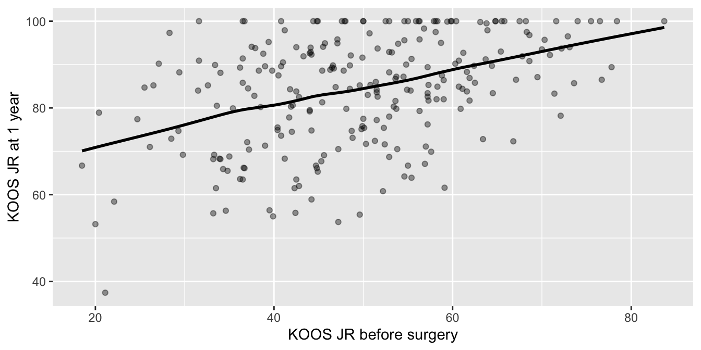
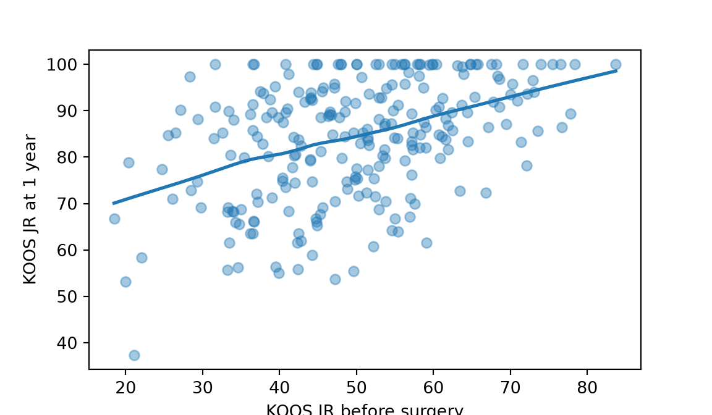
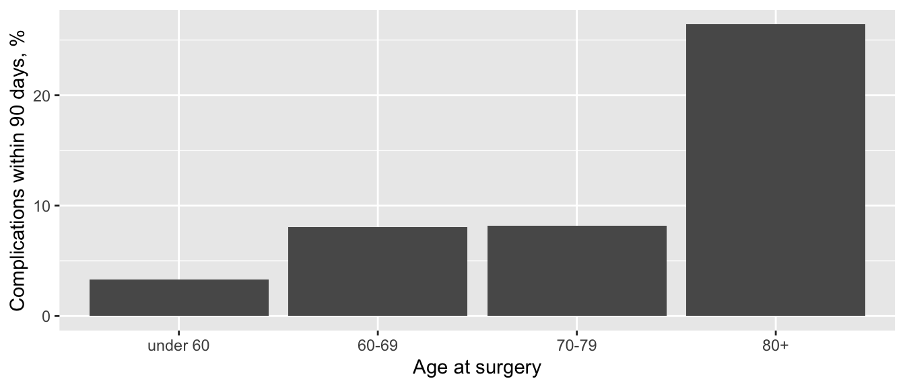
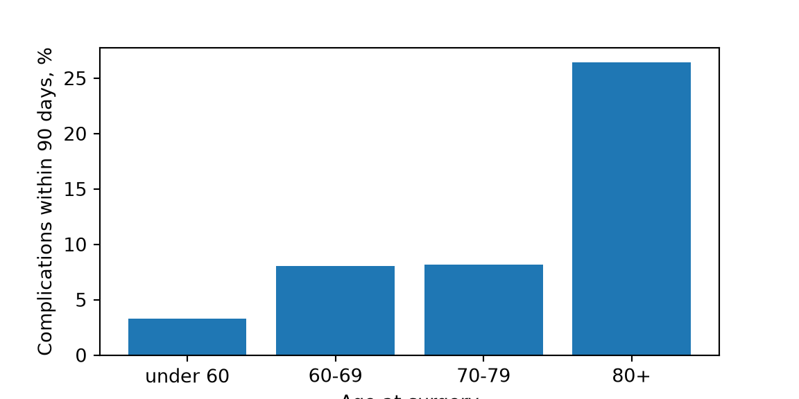
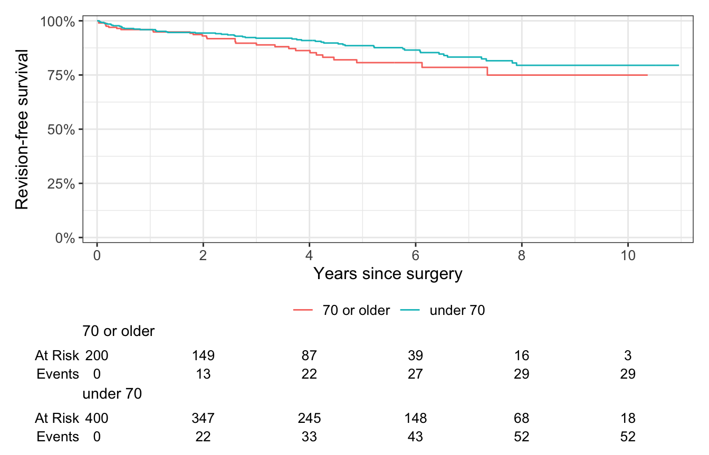
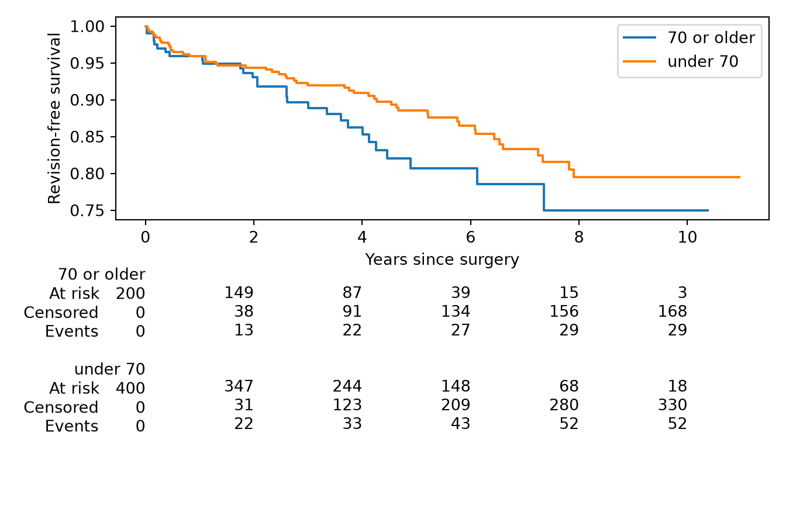

Simple linear and nonlinear regression, nonparametric regression, simple logistic regression and Cox regression: how an outcome changes with one predictor.
A correlation (page 10) says how strongly two things go together. Regression says how much the outcome changes for each unit of the predictor, and lets you predict the outcome for a new patient. Which regression depends on the outcome: a measurement on a straight line or a curve, a measurement that isn’t normal, a yes/no outcome, or time until an event. With several predictors at once, see page 12.
Note💡 How every section on this page works
Each section answers one question about the practice cohort. Its first code block loads the packages and the data, so you can jump straight to the section you need. Run that section’s blocks in order, top to bottom.
To keep the code short, the examples use every case, including the 80 patients who had both sides operated on. In a real study, decide how to handle them (page 3) and say what you did.
Simple linear regression
The question: How much longer does the operation take for each extra point of BMI?
When to use it
The outcome is a measurement, and you want to know how much it changes per unit of one predictor, or to predict it.
The relationship is roughly a straight line, and each patient’s outcome is independent of the others’.
The residuals (each patient’s distance from the line) are roughly normal, with a similar spread all along the line. Check them after fitting.
They do here: an even band, with no curve and no funnel shape.
Effect size and 95% CI
The slope with its 95% CI is the effect size: 1.37 minutes per kg/m² (95% CI 1.15 to 1.58). Scale it to a difference that matters clinically: 5 kg/m² of BMI goes with 6.8 more minutes (95% CI 5.8 to 7.9). R² = 0.20 says how much of the variation the line explains.
How to report it
Methods: Operative time was modeled on BMI with simple linear regression.
Results: The slope of operative time on BMI was 1.37 minutes per kg/m² (95% CI 1.15 to 1.58; p < 0.001; R² = 0.20), or 6.8 minutes (95% CI 5.8 to 7.9) per 5 kg/m².
Warning⚠️ Watch out: the line is an average, and only inside your data
The line predicts the average operative time at each BMI. Individual patients scatter around it by about 15 minutes either way (the residual standard error), so it’s a poor tool for scheduling one patient’s case. And BMI here runs from 18.0 to 44.5: don’t use the line to predict outside that range.
Nonlinear regression
The question: How quickly does KOOS JR recover after knee replacement, and where does it level off?
When to use it
The outcome follows a curve whose shape you know in advance, and the curve’s numbers mean something: here a starting score, a plateau and a recovery rate.
You supply the formula and rough starting guesses, and the program finds the values that fit best (nonlinear least squares).
1146 scores from 330 knees. The scores climb steeply over the first 3 months, then more slowly toward 1 year: a curve that levels off, not a straight line.
low high
plateau 82.561762 85.850467
start 48.495962 51.159541
tau 69.941098 91.787025
print(np.log(2) * estimates[2]) # days to half of the eventual gain
56.05069619705848
KOOS JR rose from about 49.8 points (95% CI 48.5 to 51.2) on the day of surgery toward a plateau of 84.2 (95% CI 82.6 to 85.9). Half of the gain came by about 56 days, 8 weeks (95% CI 49 to 64).
How to report it
Methods: KOOS JR was modeled against days since surgery with an exponential recovery curve fitted by nonlinear least squares, counting the pre-op score as the score on the day of surgery.
Results: In 330 knees (1146 scores), the fitted curve gave an estimated KOOS JR of 49.8 points (95% CI 48.5 to 51.2) at surgery and a plateau of 84.2 points (95% CI 82.6 to 85.9); half of the change was reached at about 56 days (95% CI 49 to 64).
Warning⚠️ Watch out: each knee appears up to four times
Nonlinear least squares treats the 1146 scores as 1146 independent patients, but they come from 330 knees, and scores from the same knee are related. So these CIs can’t be trusted: depending on the number, they may be too narrow or too wide. A mixed model (page 16) accounts for this. And if the fit fails to converge, try starting guesses closer to what the plot shows.
Tip🔀 R vs Python: two kinds of CI
R’s nls() and scipy’s curve_fit() use different fitting algorithms but find the same estimates and standard errors.
R’s confint()profiles the fit: it moves each number away from its estimate until the fit gets significantly worse. scipy gives only the standard errors, so the Python code uses estimate ± t × standard error. The two CIs differ slightly; here τ’s CI runs from 71.0 to 92.5 days in R and 69.9 to 91.8 in Python. Either is fine; say which you used.
Nonparametric regression
The question: How does KOOS JR at 1 year depend on KOOS JR before surgery, when many patients reach the ceiling of 100?
When to use it
The outcome is a measurement that isn’t normal: it has a ceiling, a skew or outliers, so the residuals of a straight line won’t be normal.
LOWESS (locally weighted smoothing) draws the shape without a formula: it fits many small lines, each to the points near it, and joins them into a smooth curve. It gives a picture, not a p-value.
The Theil-Sen slope is the median of the slopes between every pair of patients. A few extreme patients barely move it, and its CI comes from ranks, not from normal residuals.
library(tidyverse)proms <-read_csv("data/proms_long.csv", show_col_types =FALSE)koos_wide <- proms |>filter(instrument =="KOOS JR", visit %in%c("preop", "1yr")) |>select(case_id, visit, prom_score) |>pivot_wider(names_from = visit, values_from = prom_score) |># one row per kneerename(one_year =`1yr`) |>filter(!is.na(preop), !is.na(one_year))smooth <-lowess(koos_wide$preop, koos_wide$one_year) # LOWESS curve, R's defaultsggplot(koos_wide, aes(preop, one_year)) +geom_point(alpha =0.4) +geom_line(data =tibble(preop = smooth$x, one_year = smooth$y), linewidth =1) +labs(x ="KOOS JR before surgery", y ="KOOS JR at 1 year")

nrow(koos_wide)
[1] 246
sum(koos_wide$one_year ==100) # at the ceiling
[1] 37
import numpy as npimport pandas as pdimport matplotlib.pyplot as pltfrom scipy import statsfrom statsmodels.nonparametric.smoothers_lowess import lowessproms = pd.read_csv("data/proms_long.csv")koos_wide = (proms[(proms["instrument"] =="KOOS JR") & proms["visit"].isin(["preop", "1yr"])] .pivot(index="case_id", columns="visit", values="prom_score") # one row per knee .dropna(subset=["preop", "1yr"]))smooth = lowess(koos_wide["1yr"], koos_wide["preop"], frac=2/3, it=3, delta=0.01* np.ptp(koos_wide["preop"])) # R's lowess() defaultsfig, ax = plt.subplots(figsize=(6, 3.5))ax.scatter(koos_wide["preop"], koos_wide["1yr"], alpha=0.4)ax.plot(smooth[:, 0], smooth[:, 1], linewidth=2)ax.set_xlabel("KOOS JR before surgery")ax.set_ylabel("KOOS JR at 1 year")plt.show()

print(len(koos_wide), (koos_wide["1yr"] ==100).sum()) # knees, at the ceiling
246 37
246 knees have both scores, and 37 of them (15.0%) score the maximum of 100 at 1 year. The LOWESS curve rises steadily from about 70 to about 99 across the range of pre-op scores.
slope = 0.39: each extra point before surgery goes with 0.39 more points at 1 year (the median of all the pairwise slopes).
intercept = 65.4: the predicted 1-year score for a pre-op score of 0; it anchors the line.
low, high (R) or low_slope, high_slope (Python): the 95% CI for the slope, 0.27 to 0.52.
Effect size and 95% CI
The Theil-Sen slope with its CI is the effect size: 0.39 points at 1 year per pre-op point (95% CI 0.27 to 0.52). An ordinary least-squares line gives 0.43; the two would differ more if a few unusual patients pulled the least-squares line.
How to report it
Methods: Because 1-year KOOS JR clustered at the ceiling, its relationship with pre-op KOOS JR was described with a LOWESS smoother and summarized with the Theil-Sen slope.
Results: Among 246 knees, 37 (15.0%) scored 100 at 1 year. The Theil-Sen slope of the 1-year KOOS JR on the pre-op KOOS JR was 0.39 points per point (95% CI 0.27 to 0.52).
Warning⚠️ Watch out: robust isn’t ceiling-proof
Theil-Sen resists outliers, but nothing can see above a ceiling: the 37 knees at 100 might have scored higher on a longer scale, so the true slope at the top of the range is unknown. And a LOWESS curve is least reliable at its two ends, where it rests on few patients.
Tip🔀 R vs Python: Theil-Sen in R, and LOWESS settings
Theil-Sen in R: some R packages get the CI wrong when scores are tied, as PROM scores always are (deming 1.4-1 misapplies its tie correction; mblm’s CI is far too narrow). So the R code computes the slope and Sen’s CI directly, the same way scipy does, and the two agree exactly.
Intercept: scipy’s default (method="separate") computes it as median(y) − slope × median(x). The R code computes median(y − slope × x), which scipy calls method="joint". The slope is the same either way.
LOWESS: R’s lowess() and statsmodels’ lowess() run the same algorithm, but statsmodels’ defaults differ (it sets delta to 0), so the Python code spells out R’s settings. ggplot2’s geom_smooth() uses a different smoother, loess(), which draws a similar but not identical curve.
Simple logistic regression
The question: Does the risk of a complication within 90 days rise with age?
When to use it
The outcome is yes/no (complication or not), and you want the odds ratio per unit of one predictor.
It assumes the log odds change in a straight line with the predictor: each extra decade multiplies the odds by the same amount.
You need enough patients with the outcome: a common rule of thumb is at least 10 per predictor.
ggplot(by_age, aes(age_band, percent)) +geom_col() +labs(x ="Age at surgery", y ="Complications within 90 days, %")

import numpy as npimport pandas as pdimport matplotlib.pyplot as pltimport statsmodels.formula.api as smfcohort = pd.read_csv("data/cohort.csv")cohort["age_10"] = cohort["age"] /10# age in decades, so the odds ratio is per 10 yearsbands = pd.cut(cohort["age"], bins=[-np.inf, 59, 69, 79, np.inf], labels=["under 60", "60-69", "70-79", "80+"])by_age = cohort.groupby(bands, observed=True)["complication_90d"].agg(n="count", complications="sum", percent="mean")by_age["percent"] =100* by_age["percent"]print(by_age)
n complications percent
age
under 60 151 5 3.311258
60-69 249 20 8.032129
70-79 147 12 8.163265
80+ 53 14 26.415094
fig, ax = plt.subplots(figsize=(6, 3))bars = ax.bar(by_age.index.astype(str), by_age["percent"])ax.set_xlabel("Age at surgery")ax.set_ylabel("Complications within 90 days, %")plt.show()

Complications followed 5 of 151 procedures (3.3%) in patients under 60 and 14 of 53 (26.4%) in patients aged 80 or more; 51 of 600 overall.
age_10 = 0.75: the change in the log odds of a complication per 10 years of age. Log odds are hard to read, so turn the coefficient into an odds ratio (next step).
Std. Error 0.17, z = 4.42, p < 0.001: the test of whether age matters at all.
Intercept = −7.49: the log odds at age 0, which only anchors the line.
Null and residual deviance (R) or LLR p-value (Python): how much better the model fits with age than without it.
Each 10 years of age multiplied the odds of a complication by 2.12 (95% CI 1.53 to 2.98).
How to report it
Methods: The association between age and complications within 90 days was estimated with logistic regression, with age in 10-year units.
Results: Complications followed 51 of 600 procedures (8.5%). The odds ratio for a complication per 10 years of age was 2.12 (95% CI 1.53 to 2.98; p < 0.001).
Warning⚠️ Watch out: a straight line on the log-odds scale is an assumption
The model says each decade multiplies the odds by the same 2.12. The table above suggests otherwise: the rate barely changes between the 60s and the 70s, then jumps after 80. Check the shape before trusting a single odds ratio; splines let the effect bend. And an odds ratio isn’t a risk ratio: the two are close only when the outcome is rare, as it is here (8.5%).
Tip🔀 R vs Python: profile and Wald CIs
R’s confint() on a glm()profiles the likelihood, which is more accurate in small samples. statsmodels’ conf_int() uses the simpler Wald method (estimate ± 1.96 standard errors), which gives 1.52 to 2.95 here; R’s confint.default() does the same. Say which you used.
Cox regression
The question: Does the hazard of revision rise with age at surgery?
When to use it
The outcome is time until an event (revision), and the predictor is a measurement (age).
Cox regression gives a hazard ratio per unit of the predictor. Choose a unit that means something: per 10 years, not per year.
It assumes the hazard ratio stays the same over time (proportional hazards) and that the log hazard changes in a straight line with age. Page 14 shows how to check both and covers Cox regression in full.
Look at the data first
Splitting age in two is only for the picture; the model uses age as a number.
library(tidyverse)library(survival)library(ggsurvfit)cohort <-read_csv("data/cohort.csv", show_col_types =FALSE) |>mutate(age_10 = age /10, # age in decadesage_group =if_else(age >=70, "70 or older", "under 70")) # for the plot onlysurvfit2(Surv(followup_years, revised) ~ age_group, data = cohort, conf.type ="log-log") |>ggsurvfit() +add_risktable() +scale_ggsurvfit() +labs(x ="Years since surgery", y ="Revision-free survival")

import pandas as pdimport matplotlib.pyplot as pltfrom lifelines import KaplanMeierFitter, CoxPHFitterfrom lifelines.plotting import add_at_risk_countscohort = pd.read_csv("data/cohort.csv")cohort["age_10"] = cohort["age"] /10# age in decadescohort["age_group"] = cohort["age"].map(lambda age: "70 or older"if age >=70else"under 70") # for the plot onlyfig, ax = plt.subplots(figsize=(7, 4.5))curves = []for group_name, group in cohort.groupby("age_group"): km = KaplanMeierFitter(label=group_name).fit(group["followup_years"], group["revised"]) km.plot_survival_function(ax=ax, ci_show=False) curves.append(km)ax.set_xlabel("Years since surgery")ax.set_ylabel("Revision-free survival")add_at_risk_counts(*curves, ax=ax)plt.tight_layout()plt.show()

29 of 200 procedures in patients aged 70 or older were revised, against 52 of 400 in younger patients. The curves separate a little, with wide overlap.
print(age_cox.log_likelihood_ratio_test().test_statistic) # overall likelihood ratio test
3.2264967970797898
Read the output
exp(coef) = 1.25: the hazard ratio per 10 years of age: the hazard of revision is 1.25 times higher for a patient 10 years older.
lower .95 / upper .95 = 0.98 to 1.59: the 95% CI, which includes 1 (no difference).
Pr(>|z|) = 0.073: the p-value for age.
Likelihood ratio test = 3.23 on 1 df, p = 0.07: the overall test; with one predictor it says the same as the p-value for age.
Concordance = 0.56 (R only): how often the model ranks two patients’ revision times correctly. 0.5 is a coin toss, so age alone predicts revision poorly.
Effect size and 95% CI
The hazard ratio per 10 years, 1.25 (95% CI 0.98 to 1.59), is the effect size. The CI is wide: the data fit a small decrease in hazard with age as well as a 59% increase per decade.
How to report it
Methods: The association between age at surgery and revision was estimated with Cox proportional hazards regression, with age in 10-year units.
Results: The hazard ratio for revision per 10 years of age was 1.25 (95% CI 0.98 to 1.59; p = 0.073).
Warning⚠️ Watch out: older patients die before they can be revised
Deaths are treated as censored here, so the hazard ratio describes the revision rate among patients still alive. That’s a fair answer to its own question. But older patients die sooner, so fewer of them live long enough to need a revision: an older patient’s actual chance of being revised is smaller than the hazard ratio suggests. To describe that chance, use the cumulative incidence (page 13) or a Fine-Gray model (page 14).
Exercises
The solutions use the packages and data loaded in the sections above, so run the page from the top first.
1. How much does operative time change with age? Fit a simple linear regression and report the slope with its 95% CI.
Intercept 68.516766
age 0.243639
dtype: float64
0 1
Intercept 59.347054 77.686479
age 0.105113 0.382165
0.019561620543887215
Results: The slope of operative time on age was 0.24 minutes per year (95% CI 0.11 to 0.38; p < 0.001; R² = 0.02).
That’s about 2.4 minutes per decade, and age explains only 2% of the variation, against 20% for BMI.
2. A colleague asks whether older patients are more likely to be discharged to a rehabilitation clinic rather than home. Which regression would you use, and what do you find?
TipSolution
The outcome is yes/no (rehabilitation clinic or home) and the predictor is a measurement: simple logistic regression. Only 30 patients went to a rehabilitation clinic, enough for one predictor.
Results: In 270 hips (906 scores), the fitted curve gave an estimated HOOS JR of 45.6 points (95% CI 44.2 to 46.9) at surgery and a plateau of 87.9 points (95% CI 86.3 to 89.4); half of the change was reached at about 37 days (95% CI 33 to 41).
Hips seem to recover faster than knees (half the gain by about 5 weeks, against 8). To test that difference, fit both in one model (page 12).